- Home
- Schedule
- Presentation
- Gold supporters
- Attend
- Bell Test Hackathon
- "Co-operative 2.0"
- Kinko
- Lovely gray buttons
- Synthetic diamonds
- apertus° AXIOM
- PCBWriter
- Born in USSR
- The mor1kx
- Open Tiled Manycore SoC
- Smelting at the Electrolab
- XRP
- NetFPGA-10G
- LM32NetBSD
- Makers VS patent law
- Optics Photonics with Lego
- Glassworking
- Quantum Cryptography
- Electron Beam Welding
- VIRAC
- Astropeiler Stockert
- Bending Glass
- Learn to Solder
- Illumina Sequencer
- Yosys
- Mass Spectrometry
- Supporters
- Key information
Exceptionally Hard & Soft Meeting #2
pushing frontiers of open source & DIY
DESY Hamburg site, June 27-29 2014.
Mailing list • IRC: #ehsm on Freenode • Twitter • Youtube • Facebook event • Google Plus event • HuffPo news • TTF newsCollaboration between open source and research communities empowers open hardware to explore new grounds and build devices that are not just CNC plastic extruders. The first edition of the Exceptionally Hard and Soft Meeting featured lectures delivered by international makers, hackers, scientists and engineers on topics such as nuclear fusion, chip design, vacuum equipment machining, and applied quantum physics. Tutorials gave a welcoming hands-on introduction to people of all levels, including kids.
EHSM is back in summer 2014 for another edition of the most cutting-edge open source conference. This year we are proud to welcome you to an exceptional venue: DESY, Europe's second-largest particle physics laboratory!


Previous EHSM lectures may be viewed here (see also 2012 website and 2012 pictures). They wrote about us:


Gold supporters

The German Unix User Group, founded in 1984, is an association of administrators, programmers and IT specialists who use the UNIX operating system. For over 20 years GUUG has held national and international conferences, and publishes a magazine called UpTimes.

Attend
Attendance is open to all curious minds.
There are no more online tickets, but you can get a ticket at the door:
- 110€ - regular 3-day ticket.
- 55€ - student/low-income 3-day ticket.
- 45€ - single day ticket.
EHSM is a non-profit event where the majority of the budget covers speakers' travel and transportation of exhibition equipment.
To apply for press accreditation, email accreditation@ehsm.eu. Please submit samples of your best articles if they cannot be found with an Internet search for your name. Generally, we prefer journalists who take the effort to write in-depth articles.
Bell Test Hackathon
EHSM will be a great opportunity to do science together: a hackathon will be carried out during 3 days to try and reproduce a Bell test experiment.
This hackathon will let interested people participate and bring their ideas and equipment to the project, in order to obtain a better understanding of the physics involved. Technical decisions still need to be made, and the project will be thought out all along June to go as far as possible during EHSM. This month will also be employed to find the hardware required to successfully carry out this experiment. Feel free to contact the hackathon organizer if you wish to take part to the challenge, bring some equipement, or to ask for more details: antoinejeandet AT gmail.com.
Do not forget to also subscribe to the mailing list, so you can be kept updated about this project (and all other news !).
Programme
"Co-operative 2.0" - company model for a fairer economy?
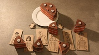The "co-op 2.0" is to establish a new type of company with a set of built-in characteristics and mechanisms which ensure the corporation contributes to a fairer and more sustainable economy.
Based on the well-tried legal frame, the co-op 2.0 enhances the classical cooperative and takes it to the internet age. Its main features are democratic control, transparency, open source, involving and creating benefits for a lot of people (and not just a few) and fairness towards all stakeholders.
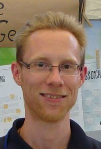After presenting the model and its components using the example of its pioneer company fairnopoly.de, I would like to discuss its potential and relevance. Can it be a lever to create a better economy? What other elements are necessary? All guests are invited to participate in the discussion and ask critical questions.
Speaker: Timo Büdenbender graduated in business administration in 2008 and now pursues projects in the green economy. He volunteers a part of his time to promote the co-op 2.0 as an "ambassador" in Hamburg.
kinko: e-mail encryption out of the box
kinko is an easy-to-use secure accessible PGP proxy in extra hardware, encrypting and decrypting emails for you. It is designed to be easy to use, 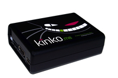as it takes email encryption out of the email client into dedicated hardware, making encryption an automatic process. It uses open source encryption (e.g. GnuPG), and sensistive data (e.g. private keys) rests at your home in your control. The aim is to allow every person no matter their skills in computers to start encrypting emails.
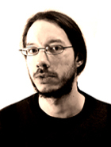Speaker: Leslie Polzer first started tinkering with computers at the age of five. 25 years later he's fluent in various programming languages and UNIX systems and knows how to use this to build good software. At present he's working with a bunch of smart guys to make email privacy accessible to everyone. Besides software topics Leslie also has a keen interest in guitars and music, photography, DIY electronics and lots of other stuff that is way too much to fit into a 24 hour day, so he considers moving to another planet with longer days.
Lovely gray buttons: the open source history of widgets with snippets of code
The presentation covers a 30-years evolution of widget toolkits, which took place along with the historical changes in a desktop GUI. Widget toolkits are reviewed from three points of view: architecture, user experience, and programming principles. More than 90% of historically significant widget toolkits have open source licenses: some are opensourced after decrease of their commercial demand (like OpenLook and Motif), others are developed as a part of FLOSS world (TCL/TK, GTK+, QT) or in systems cloned by the open source community (Amiga, BeOS, etc.).
Specifics of programming is reviewed on the basis of a typical hello world code examples used to compare complexity, readability and events processing. Alongside the source code, visual demo of the appropriate GUI is shown with use of virtual machines, embedded into the presentation slides.
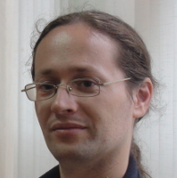Reviewed toolkits of 1980s include Apple Lisa GUI, early Unix GUI of Andrew Toolkit and Project Athena, followed by OpenLook and Motif, and main non-Unix toolkits: WinAPI and NextSTEP GUI. Significant toolkits of 1990s include Intuition widget set from Amiga, TCL/TK, wide range of wrapper toolkits including MFC and Java AWT, main Linux widget libraries (GTK+ and QT), and Swing. Also the burst of visual theming occurred in the second half of 1990s is examined for Unix and Windows platforms (as in their artistic styles, so in used architectural approaches). Main milestones of post-Y2K widgets include Apple Cocoa style, slight decline of theming popularity in Linux world (supposedly Oxygen-driven), controversial Microsoft experiments with ribbons and its attempt to change the everywhere-used industrial visual style with the typographical one in Metro.
Speaker: Dmitriy Kostiuk works as an associated professor at Computers & Systems dept. in Brest State Technical University (Belarus), being also a GNU/Linux & free/libre software evangelist in this country, and also co-organizer of LVEE, the main open source conference in Belarus since the year 2006.
Synthetic diamonds for the quantum computer revolution
 The idea behind quantum computing is to use quantum phenomena such as superposition and entanglement to perform data processing. However, applying these quantum concepts to macroscopic devices like computers is an enormous challenge for information scientists and physicists alike. What does it make so hard? Well, scientists have to find a material in which they are able to store and manipulate quantum bits (qubits). Since quantum states are very fickle and thus hard to abide, the most important task is to find materials in which qubits can be stored for a sufficient long time. Surprisingly they found these properties in diamond.
The idea behind quantum computing is to use quantum phenomena such as superposition and entanglement to perform data processing. However, applying these quantum concepts to macroscopic devices like computers is an enormous challenge for information scientists and physicists alike. What does it make so hard? Well, scientists have to find a material in which they are able to store and manipulate quantum bits (qubits). Since quantum states are very fickle and thus hard to abide, the most important task is to find materials in which qubits can be stored for a sufficient long time. Surprisingly they found these properties in diamond.
This talk is an entertaining «tour de force» including a brief introduction to the fascinating yet strange theories of quantum physics, the concepts of using these in quantum computing and the latest results on qubits in devices made out of diamond. Moreover this presentation is given by a physicist who has been working on diamond for various other applications for years - who suddenly realized that he might have the material for the next IT revolution right in his lab.
If you want to learn about the machines that might solve difficult problems in the coming years (such as intensive computations in astronomy, physics, and chemistry – or even decrypting your passwords) and how you can actually make your own diamonds from methane, hydrogen and a microwave source – this talk is for you!
Speaker: Nicolas Wöhrl joined the Center of Nanointegration (CENIDE) at the University of Duisburg-Essen where he is working at the Nano Energy Technology Center (NETZ). NETZ is an application-focused research project. The aim of the project is to develop materials and also processes which allow nanotechnology to be used in industry – especially focused on energy applications. Currently, research focuses on developing materials and processes to be used in fuel cells, battery technology, catalysis, thermoelectrics and photovoltaics. His works include the atmospheric plasma treatment of surfaces for these applications to modify their surface properties and the synthesis of nanostructured carbon materials (NV-centers in diamond, nanocrystalline diamond, amorphous carbon, graphene, ...)
apertus° AXIOM – the first FOSS/OH Digital Cinema Camera
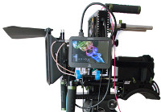apertus° is building the first ever free and open source software (FOSS) and mostly open hardware (OH) digital cinema camera: the apertus° AXIOM. This talk will demonstrate the AXIOM Alpha proof of concept prototype and present the plans for the second incarnation, the AXIOM Beta which is targeted at developers and early adopters and has a focus on community input and hardware flexibility.
The goal of the community driven apertus° project is to create a variety of powerful, free (in terms of liberty) and open cinema tools that we as filmmakers love to use. The idea of building an open cinema camera was born in 2006, found many followers over the years and ultimately resulted in this project entitled "apertus".
Speakers: Sebastian Pichelhofer (28) lives in Vienna, Austria and has spent the last six years working on apertus° like if it was a paid job for him just without the money part... This dedication has over time made him an essential asset for the project and the team has rewarded him with electing him apertus° association chairman in addition to his role as project leader. Sebastian studied electronic engineering and software development but actually worked in the postproduction department of a documentary film production before he got his current job in the multimedia department of a university.
Herbert Poetzl (43) lives in Austria, nearby Vienna, and joined the project in summer 2013 helping out with hardware and software development for the AXIOM Alpha and Beta. Herbert studied physics and computer sciences at the Vienna University of Technology and has a background in electronics, worked at various smaller and larger companies in Austria and then got self-employed as IT consultant. He maintains LinuxVServer, a virtualization solution, since 2001 and participated in various projects like OLPC and PlanetLab.
PCBWriter
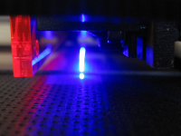The PCBWriter is a device to quickly produce high-quality printed circuit boards (PCBs). It uses a high power UV laser diode to directly expose the photoresist on the PCB. The direct exposure technique removes a lot of the typical problems with toner transfer or laser printer transparencies, allowing to reliably create PCBs even with the small structures needed for today's chips.
Inspired by a similar project at "Das Labor" in Bochum, we have constructed a prototype device that we regularly use to produce PCBs. While there is still scope for improvement (as usual), the device is very handy if one quickly needs a PCB. All code and schematics are available under a free license.
We will give a brief talk introducing the basic method and our implementation of it. We will also bring our device and a few sample PCBs produced with it, give advice to anyone who wants to replicate it, and share our ideas about what to improve in the next version.
Speakers: Norbert Braun and Felix Schneider.
Born in USSR, died in Russia: an exploration of decaying Soviet technology
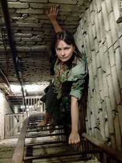The Cold War was a period of ambitious military, industrial and scientific projects, motivated by the competition with the opposing superpower. After the collapse of the Soviet Union, many of their facilities were simply abandoned, forgotten and left to rot. Urban explorer Lana Sator's expeditions and pictures give a dramatic insight into the breadth of technologies that people can build given enough motive, and how frail those motives can be.
{kind=link}
The mor1kx OpenRISC processor
The mor1kx is a OpenRISC 1000 compliant softcore microprocessor written in Verilog. The initial motivation for the work at its inception was to provide a code base which would be friendly to multiple pipeline implementations, encouraging a high degree of reuse of common blocks. It initially saw the development of 3 different pipelines, each providing a different trade-off between area and performance. The most high-end pipeline has subsequently been honed by its developers to contain more features and better performance than the original OR1K processor, the OR1200.
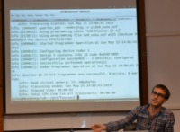Recent work includes cache and MMU features which improve the performance of software such as the Linux kernel. Other interesting work has been on enabling multi-core capability. This talk will present the OpenRISC project, the core and its current status, comment on its development environment (a nod to other open source EDA efforts), licensing, and current uses in various projects.
Speakers: Julius Baxter is a digital design engineer who has been involved with the OpenRISC project for over 5 years. In that time he's dabbled with everything from RTL and the Linux kernel, to debuggers and licensing.
An Open Tiled Manycore System-on-Chip
With the increasing amount of processor cores, the traditional bus-based shared memory systems face the scalability issue. Modern manycore system-on-chip are therefore based on a network-on-chip. So called tiles are connected to the network and contain the actual processor cores. For research and prototyping of such system, we have started the Open Tiled Manycore System-on-Chip (OpTiMSoC) project. It is based on the OpenRISC processor and contains all necessary hardware and software to start prototyping modern manycore platforms. This talk gives an overview about the project goals, the different development branches and future plans.
Speaker: Stefan Wallentowitz.
Smelting at the Electrolab
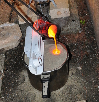In a hackerspace, people often build things using various rapid manufacturing techniques. 3D printing, machining, laser cutting are common, but sometimes members need some bulky metal parts that are difficult to machine from a blank. Enter DIY smelting and casting, which is already a fun thing to do by itself, but is even funnier when it's elevated to a rapid manufacturing technique available to our members to build their projects. We will present our prototype furnace, some objects created with it in our hackerspace, and our current work on the "production" furnace, that will be able to melt 6 liters of aluminium, brass, copper, iron, etc... and also to convert cast iron into steel by controlling the amount of carbon. Some time will be dedicated to presenting the work in progress towards the Electrolab v2.0.
Speakers: Sebastien Lorquet is a smart card and secure embedded software engineer during the day, and a hacker during the night. He's also an amateur radio operator and spends its free time experimenting with microwaves, electronics, mechanics and physics.
Tom Brelet is a Master's Degree student, intern at Peugeot, in a R&D team. He has worked on a lot of personal projects involving soldering, melting, cutting and machining metal, most of them in his student bedroom.
Jordi Erra is also a Master's Degree student, intern at Air Liquide R&D, and by night he is an active hacker, with a specialty in cold-producing machines.
All are active members of the Electrolab hackerspace, which provides them with important technical and human resources to work on more ambitious projects.
The eXperimental Robot Project
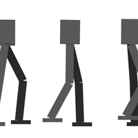The goal of the eXperimental Robot Project (XRP) is to develop an open-hardware humanoid robot - or, more precisely, a bipedal walking machine. Much of the work until now has been on studying walking in simulation. In addition, to explore the application of optimization-based control to real world systems, we are currently building a so-called Acrobot (a double pendulum where only the middle joint is actuated).
In the talk, we will present the physics of walking and how a successful walking machine can be built, at least in simulation. We will then discuss our plans for moving from simulation to actual hardware.
Speakers: Norbert Braun and Felix Schneider are two robotics enthusiasts based in Cologne, who have been developing electronics and mechanics together since several years at DingFabrik, a local hackerspace. Past projects include a 1200x600mm CO2 laser cutter (based on Lasersaur), a UV laser PCB exposure device and several smaller projects around the hackerspace (bell system, CNC router, ...). In the meantime we are continuously working on the XRPBot project. Norbert is doing most of the simulations, while Felix takes the lead on the mechanical design.
The Open Source Network Tester on NetFPGA-10G
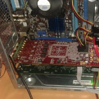Despite network monitoring and testing being critical for computer networks, current solutions are both extremely expensive and inflexible. Into this lacuna we launch the Open Source Network Tester (OSNT), a fully open-source traffic generator and capture system. Our prototype implementation on the NetFPGA-10G supports 4x10Gbps traffic generation across all packet sizes and traffic capture is supported up to 2x10Gbps with native host software. Our system implementation provides methods for scaling and coordinating multiple generator/capture systems and supports 6.25ns timestamp resolution with clock drift and phase coordination maintained by a GPS input. Additionally, our approach has demonstrated lower-cost than comparable commercial systems while achieving comparable levels of precision and accuracy; all within an open-source framework extensible with new features to support new applications, while permitting validation and review of the implementation.
Speakers: 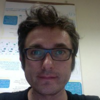Marc Bruyere is a PhD Student at the LAAS/CNRS and a Dell Force10 employee. His thesis is about network monitoring on programmable hardware. Used to be NOC member at the CCC congress, co-founder of the non profit ISP tetaneutral.net, co-founder of Snootlab and founder of the Toulouse HackerSpace Factory.
Dr. Gianni Antichi is a Research Associate at the Cambridge Computer Laboratory. Dr. Antichi received the B.E. and the M.E. degrees in telecommunications engineering and the PhD degree in information engineering from the University of Pisa, Italy, in 2005, 2007, and 2011, respectively. His research interests are in the area of hardware accelerated networking systems, network design, network monitoring, packet classification and software defined networks.
Porting NetBSD to the LatticeMico32 open source CPU
In this presentation, I will describe the work I did on the open source LatticeMico32 softcore CPU to add a MMU (Memory Management Unit) to its pipeline and then how I added support for this enhanced LM32 CPU in the NetBSD 6 kernel.
I will first quickly introduce the LatticeMico32 CPU and what FPGAs can do. Then I will focus on explaining what a MMU is and how the current MMU design that was added to LM32 works. I will then show an overview of the steps you need to accomplish to add support for a new CPU and a new System-on-Chip to the NetBSD kernel. Afterward I will explain some of the choices made for this port, especially those in relation with the handling of the MMU by the NetBSD kernel: the (machine-dependent) virtual memory system (aka pmap).
I will (try to) demo the boot of the NetBSD kernel on QEMU emulating LM32 CPU the and then on the Milkymist One board.
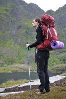Speaker: Yann Sionneau is a 26 year-old French embedded software engineer passionate about learning how embedded systems work in general.
Yann is part of the M-Labs (fka Milkymist) community that is working on developing open source digital designs on FPGAs as well as making it more and more easy to do so by providing a simple but yet powerful framework for System-on-Chip design.
Yann contributed the original RTEMS Board Support Package of the Milkymist One video synthesizer, a Memory Management Unit (MMU) for the Open Source soft-core CPU LatticeMico32, and ported NetBSD kernel for the LM32 CPU and the Milkymist System-on-Chip.
The Maker Movement meets patent law – how many windows are open in the patent fortress?
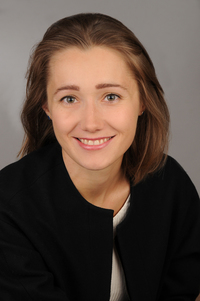As the Maker/DIY movement gets more technologically advanced, it encounters patent law.
The speaker argues that the existing patent flexibilities, e.g. private, non-commercial or experimental use, are too narrow to be maker-protective. Designed to safeguard the freedom to operate, they do not fulfil their role in this specific context. Additionally, the ongoing expansion of patent rights limits knowledge diffusion and the access to resources.
To support her hypothesis, she has conducted an online survey on the experience of makers with possible patent infringements. She also did a comparative analysis of patent tools employed in four patent systems (Germany, the US, the UK and Japan) that scrutinises the regulatory situation with regard to the freedom to operate.
She concludes that current patent law does not guarantee sufficient predictability, and under the dominating mind-set, patentee's rights are of higher concern and the balance of interests gets a raw deal. Makers are safe as long as their achievements do not generate much revenue and they do not "stick out".
Speaker: Natalia Łukaszewicz is a PhD Candidate at the LMU Munich where she is finishing the project "A study on a patent exception for user-generated innovation". For a better understanding of patent environment she works at the Fraunhofer-Gesellschaft in Patents and Licensing Department. She did the master in European Studies (law & economics) at Poznan University (Poland), and later participated in LLM Program at LMU Munich where she got into the field of intellectual property law.
Optics & Photonics with Lego®-bricks: Open Hardware for young researchers
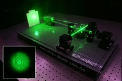How to fascinate young researchers for the field of optics & photonics? Is there any experimental platform for them to make research at a professional level? How can they follow their own ideas? These questions initiated the idea of transferring optics/photonics-experiments to schools and education by using Lego-bricks. The project essentially involves the development of experiments at professional level with excellent opto-mechanical quality at low costs. Construction manuals, parts lists, manuals for experiments, setup- and adjustment movies are published as open-source on the webpage of the research group. Relevant for publication is a feedback of the constructions with didactic studies and experiences of pupils and teachers.
{kind=link}
 Speaker: Professor Dr. Mirco Imlau is the head of the ultra-fast physics research group at the department of physics, University of Osnabrück. Born in Bergisch Gladbach, he studied physics at the University of Cologne and made his PhD on novel material classes for holographic data storage. After research stays in France and Switzerland, he was appointed as one of the first Juniorprofessors in lower Saxony to the University of Osnabrück in 2002. A visiting professorship at the University of Vienna followed in 2005 and he was appointed as full professor for experimental physics with focus on optics & photonics in November 2008. His research interests involve novel phenomena & effects for the ultrafast optical control of light, efficient solar-energy conversion and ultrafast 3D-imaging/microscopy.
Speaker: Professor Dr. Mirco Imlau is the head of the ultra-fast physics research group at the department of physics, University of Osnabrück. Born in Bergisch Gladbach, he studied physics at the University of Cologne and made his PhD on novel material classes for holographic data storage. After research stays in France and Switzerland, he was appointed as one of the first Juniorprofessors in lower Saxony to the University of Osnabrück in 2002. A visiting professorship at the University of Vienna followed in 2005 and he was appointed as full professor for experimental physics with focus on optics & photonics in November 2008. His research interests involve novel phenomena & effects for the ultrafast optical control of light, efficient solar-energy conversion and ultrafast 3D-imaging/microscopy.
An Artistic Method: Two nontraditional approaches to glass
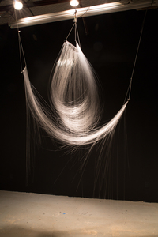Justin Ginsberg will present a portion of his experimental artistic research with the glass working processes, which began in 2009. It was at this point that he recognized that glass, when very thin, was actually a flexible material. He will present the ways in which he constructs strands of glass, by hand, and with homemade machines, while also showing the development of the process, and the results through his artwork.
In conjunction with this research, he has also been experimenting with one of the more violent interactions he encounters in the studio when the 1260°C molten glass hits water. He has been attempting to capture the form, which is a result of this process, through photography, video, and the recovery of the actual glass objects.
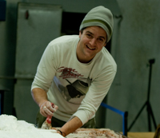Both approaches will reveal a new way to look at this amazing material.
Speaker: Justin Ginsberg is a glass artist, and a visiting assistant professor and the head of the glass area at the University of Texas at Arlington. Justin's work explores non-conventional processes of working with materials.
Basics of Quantum Cryptography
Quantum Mechanics is the framework for the laws of nature that are relevant when dealing with very small length- and energy-scales. As has widely been popularized, quantum mechanics leads to rather counterintuitive behavior when we consider small (and in special circumstances, sometimes even large) numbers of atoms. Thus far, most, if not arguably all, technology we have still relies fundamentally on classical mechanics. But for the past 35 years, there has been a serious effort to understand what is technologically possible if we try to fundamentally take advantage of the quantum properties of nature.
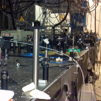The first technology to emerge from this line of thinking is "quantum cryptography", which in principle allows for completely secure communication, where the security is guaranteed by the laws of quantum mechanics. In this talk, I will provide an overview of the features of quantum mechanics that are used in quantum cryptography schemes, and will discuss several proposals for quantum cryptography. I will also discuss how quantum cryptography is commercially implemented.
Speaker: Peter McMahon is a PhD student at Stanford University. He works on experimental implementations of quantum information processing technology, in particular optical control and measurement of quantum bits represented by electrons trapped in artificial atoms.
Electron Beam Welding in Low Vacuum
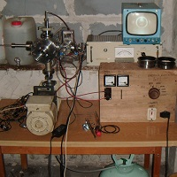Electron beam welding is a technique for joining metals and alloys that was initially used in the manufacturing of nuclear fuel for atomic reactors around 1950. It has now used many other applications. The principle is to melt materials by heating them using a focused high energy electron beam (usually 6 to 120 keV).
{kind=link}
Traditional electron beam welders use a high vacuum – better than 10-4 Torr – that is generated by a rotary pump and a diffusion and/or turbomolecular pump. The electron beam originates from a hot cathode. The focusing of electrons needs magnetic and electrostatic lenses. For those reasons, traditional electron beam welding equipment is complicated and expensive.
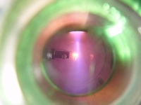Aleksander built something else: a small electron beam welder where a vacuum of 0.01-0.05 Torr is enough. This level of vacuum can be achieved by a cheap rotary pump. It even works better with a noble gas flow that stabilizes the pressure to 0.2-0.4 Torr to improve the emission of electrons from the electron gun. The electron gun is very simple: it consists only of an aluminum cold hollow cathode, brought to a negative potential of a couple kilovolts.
{kind=link}
While this electron beam welder is not as good as traditional ones (poor focusing, lower energy of electrons), it is nevertheless possible to weld wires or thin plates of aluminum, copper, nickel and other materials.
Come and see live demonstrations of how to make a thermocouple in Aleksander's electron beam welder, and the effects of electron bombardment on other materials (including dielectrics like mica and glass).
 Speaker: In 2006, Aleksander Zawada started his one-man DIY vacuum tube laboratory in Warsaw called "Prywatna Wytwórnia Lamp". Now, having more space, more equipment (mostly from dumpster diving), and cooperating with friends, they created something similar to a small research institute, where they have a mechanical workshop, an electronics laboratory and a vacuum laboratory.
Speaker: In 2006, Aleksander Zawada started his one-man DIY vacuum tube laboratory in Warsaw called "Prywatna Wytwórnia Lamp". Now, having more space, more equipment (mostly from dumpster diving), and cooperating with friends, they created something similar to a small research institute, where they have a mechanical workshop, an electronics laboratory and a vacuum laboratory.
Aleksander is an employee of the Vacuum Measurement Laboratory of the Tele & Radio research Institute in Warsaw, and of the National Center of Nuclear Research in Otwock-Świerk near Warsaw.
VIRAC - Radio astronomy in Latvia
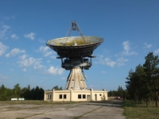In 1994, the newly independent Latvia took over a formerly secret soviet military installation: The satellite tracking site at Ventspils, consisting of a 32 meter and a 16 meter dish. With its large telescopes in the middle of a huge, quiet, almost uninhabited stretch of forest along the Latvian coast, the Ventspils site is one of the most fascinating observatories to visit in Europe. After years of hard work by scientists and technicians from Ventspils University, the site is now operating again, but is now used as an astronomical observatory.
Roberts Trops and his colleagues will tell about this extraordinary project, starting from the time when this place appeared on no maps. The talk will cover the challenges of renovation and what has been achieved until now, the current applications for the two telescopes and how VIRAC became a partner in the international astronomical community.
Astropeiler Stockert
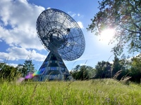Parabolic dishes dozens of meters in diameter, tracking systems for moving dozens of tons of mass with arcsecond accuracy, ultra-low-noise receiver frontends, FPGA spectrometers and GPU-supported analysis software – while radio astronomy may sound daunting for a hobby, it is a fascinating challenge.
The team of Astropeiler Stockert e.V. is one of the more active amateur radio astronomy groups in Europe. It runs the Stockert radio observatory near Bad Münstereifel. One 25 meter and one 10 meter radio telescope, formerly operated by the Max Planck Institute for Radio Astronomy, have been restored back to working order after years of neglect. Now, the telescopes are catching signals again, revealing the Milky Way's spiral structure, and faint, distant pulsars.
This talk presents the project's development from the first site cleanup in 2006 to the latest pulsar measurements only seven years later. Looking inside the machine room, we will give an overview of the entire control, drive and measurement toolchains used at the telescopes. The talk closes with an overview of the amateur radio astronomy scene in Europe and pointers to other interesting projects.
[Tutorial] Bending Glass in Flames
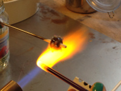 This workshop will demonstrate the art of flame-working as you discover the different properties of glass and how it bends! And we will combine artistic and scientific flameworking techniques to create those wonderful glass beads you see everywhere! Through demonstrations and individual instruction, you can have a go at experimenting with centuries-old glassmaking technique.
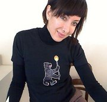 Instructor: Nadania Idriss is a PhD candidate at the Free University in Berlin, writing on contemporary art involving glass by artists from the Middle East. She first came into contact with glass while studying at the University of Washington in Seattle. She currently lives in Berlin, working at the Museum of Islamic Art, and founded and directs Berlin Glas e.V., a non-profit public access glass studio.
[Tutorial] Learn to Solder
A large variety of way cool kits are available, all designed for total beginners to complete successfully - and intriguing enough for the hardware geek. Mitch Altman will have kits available for making cool, practical, intriguing, hackable things that you can bring home after you make it.
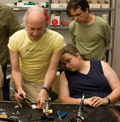 Plenty of cool kits are available to make, including TV-B-Gone (turn off TVs in public places!), Mignonette Game, LEDcube (animated 3D cube!), microcontroller programmers (program all your AVR family chips!), Arduino clones, Open Heart (animate fun patterns in the shape of a heart!), Atari Punk Console (make cool noise from an Altoids tin!), and many more.
Cost: Instruction is free, we ask that people pay only for the cost of the parts used; kit prices range from 10€ to 30€. Suitable for kids, accompanied minors (-18) do not need a EHSM ticket.
Inside the Genome Sequencing Revolution: Under the hood of an Illumina Sequencer
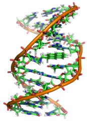 Since the introduction of 'next-generation' sequencers, the cost of sequencing a single human genome has fallen exponentially; even much faster than Moore's Law. Modern fluorescence-based genome sequencers are complex instruments that can sequence billions of basepairs in a matter of days by sequencing millions of fragments of a genome in parallel. In this talk, I show how we have deconstructed one of the pioneering Illumina instruments, explain how it works, and show how we have managed to reconstruct an automated fluorescence imaging microscope system from scrapped Illumina sequencer parts.
{kind=link}
Open Source Verilog HDL Synthesis with Yosys
 Yosys is the first full-featured open source software for Verilog HDL
synthesis. It supports most of Verilog-2005 and is well tested with
real-world designs from the ASIC and FPGA world.
Yosys is the first full-featured open source software for Verilog HDL
synthesis. It supports most of Verilog-2005 and is well tested with
real-world designs from the ASIC and FPGA world.
Learn how to use Yosys to create your own custom synthesis flow and discover why open source HDL synthesis is important for researchers, hobbyists, educators and engineers alike.
The presentation covers basic concepts of Yosys and writing simple synthesis scripts. There will be also a workshop covering advanced topics.
Yosys is the first step towards a fully open FPGA/ASIC toolchain, and is currently used with vendor place-and-route tools.
Speaker: Clifford Wolf writes open source software and is active in the open source and Linux community since the mid 90s. His prior projects include the Linux distribution build kit ROCK Linux and the 3D CAD modeller OpenSCAD. Since 2012 he is working on Yosys.
Principles of Mass Spectrometry
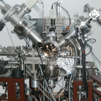 Mass spectrometry is a very useful tool in solid-state physics research and material analysis.
The presentation will cover three spectrometry techniques: Secondary Ion Mass Spectrometry (SIMS), Glow Discharge Mass Spectrometry (GDMS) and Spark Source Mass Spectrometry (SSMS).
It will explain the principles of operation and the construction of example devices and their "hearts" - quadrupole and double focusing mass spectrometers.
For a mass spectrometer to work, the analyzed material needs to be ionized first. The talk will show how that happens in SIMS, GDMS and SSMS.
Finally, the presentation will show sample measurement results.
Speaker: Maciej Miśnik is affiliated with the Vacuum Measurement Laboratory of the Tele- and Radio Research Institute in Warsaw, and the Gdańsk University of Technology.
Supporters
We thank EnjoyDigital, Goldorak, LSM2014 and LabFab for their financial support.
Key information
 Conference starts: morning of June 27th, 2014
Conference starts: morning of June 27th, 2014
Conference ends: evening of June 29th, 2014
Conference location:
DESY
Notkestrasse 85
22607 Hamburg, Germany
Looking for a hotel nearby? Here is a list. Unfortunately, staying at the DESY guesthouse is not possible.
We are looking forward to welcoming you in Hamburg!
/ EHSM e.V.